Hierdie hoofstuk is bedoel om 'n oorsig van die belangrikste stelsels in die menslike liggaam, en die basiese struktuur en funksie van die geassosieerde organe te gee. Die fokus in elke stelsel sal wees om te kyk na die belangrikste prosesse, die belangrikste komponente, en dan sommige van die potensiële gesondheidskwessies geassosieer met die stelsel.
2.1 Liggaamstelsels (Inleiding)
Take
Vaardighede
Aanbeveling
Aktiwiteit: Doen navorsing en skryf oor gesondheidskwessies
Aktiwiteit: Vloeidiagram van die spysverteringstelsel
Opsomming, beskryf, skryf
Opsioneel
2.3 Die sirkulasiestelsel (0.5 ure)
Take
Vaardighede
Aanbeveling
Aktiwiteit: Teken die sirkulasiestelsel
Opsomming, beskryf, skryf
Opsioneel
2.4 Die respiratoriese stelsel (0.5 ure)
Take
Vaardighede
Aanbeveling
Opsomming Diagram
Opsomming, beskryf, skryf
Voorgestel
2.5 Die Muskuloskeletale stelsel (1 uur)
Take
Vaardighede
Aanbeveling
Opsomming Diagram
Opsomming, beskryf, skryf
Voorgestel
2.6 Die ekskretoriese stelsel (Uitskeidingstelsel) (1 uur)
Take
Vaardighede
Aanbeveling
Aktiwiteit: Differensieer tussen ekskresie en egestie
Vergelyk, identifiseer, beskryf
Opsioneel
Opsomming Diagram
Opsomming, beskryf, skryf
Voorgestel
2.7 Die senuweestelsel (1 uur)
Take
Vaardighede
Aanbeveling
Opsomming Diagram
Opsomming, beskryf, skryf
Voorgestel
2.8 Die voortplantingstelsel (1 uur)
Take
Vaardighede
Aanbeveling
Aktiwiteit: Om die belangrikste prosesse wat betrokke is in voortplanting te definieer
Identifiseer, skryf
Opsioneel
KABV stel voor dat u 'n groot buitelyn van die menslike liggaam vir hierdie afdeling maak en elke stelsel daarop teken soos wat dit afgehandel word. U kan dit doen deur groot velle herwinde papier te kry en een van die leerders daarop af te trek. 'n Voorstel is om eerder een vir elke stelsel te maak en dit in die klas op te plak.
Alternatiewelik is hier 'n bladsy verskaf wat u kan fotokopieer en elke leerder kan hulle eie opsomming na elke stelsel maak. U kan dit na elke stelsel uitdeel en leerders kan die volgende doen:
Gee die diagram 'n opskrif.
Voeg 'n kort beskrywing van die hoofdoel van die stelsel daarby.
Lys die belangrikste prosesse wat in die stelsel plaasvind.
Maak basiese tekeninge op die korrekte plekke om te wys waar die verskillende organe en strukture van die stelsel in die liggaam geleë is.
Voeg byskrifte by vir elk van die verskillende strukture in die stelsel.
Langs elke struktuur se byskrif skryf kort punte neer om die funksie van daardie spesifieke struktuur te beskryf.
Lys onderkant die diagram sommige van die gesondheidskwessies wat verband hou met die stelsel.
Omdat hierdie hoofstuk bedoel is as 'n oorsig van die verskillende liggaamstelsels, stel ons voor dat u dit doen vir daardie stelsels wat nie later in detail bespreek gaan word nie, naamlik die:
muskuloskeletale stelsel
ekskretoriese stelsel
senuweestelsel
Die respiratoriese stelsel kom ook 'n aktiwiteit kort, so u kan dalk 'n opsommingsdiagram maak vir hierdie afdeling. U kan ook leerders kry om 'n opsommingsdiagram te voltooi vir elke stelsel as 'n huiswerk-oefening. Maar daar is beperkte tyd vir hierdie hoofstuk en baie stelsels om te dek! Die aktiwiteite en opsommingsdiagramme wat u kies is u keuse.
Hierna volg die bladsy om te fotokopieer vir leerders om die stelsels op te som:
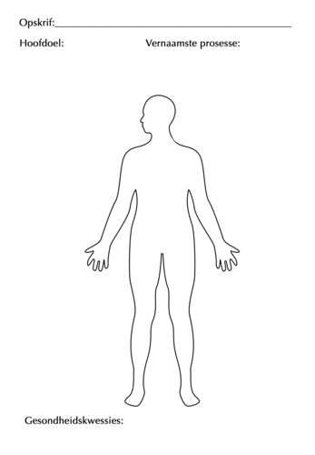
Hoe kry die liggaam dit reg om dinge te doen, soos asemhaal, beweeg en dink?
Wat gebeur as een van die stelsels in ons liggame nie behoorlik werk nie en 'n stelselfout het?
Is dit moontlik om te voorkom dat ons siek word?
Hoe kan jy op die beste manier vir jou liggaam sorg?
Die mens se liggaam is al deur die geskiedenis bestudeer deur kunstenaars en wetenskaplikes, meganiese ingenieurs en geneeshere. Die meganiese skoonheid en werking van elke deel van die mens se liggaam het deur die geskiedenis heen mense gefassineer. Wees nuuskierig en maak gereed om gefassineer te word!
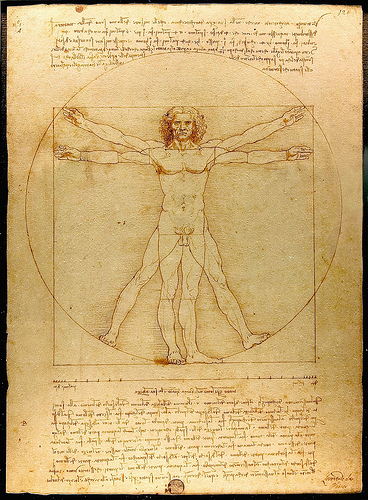Leonardo da Vinci het baie tekeninge en studies van die mens se liggaam gemaak in die 1400's, soos hierdie een wat 'Vitruvian Man' genoem word
Liggaamstelsels
integreer
As jy die definisies wil nagaan van 'n Nuwe woord, kyk na die woordelys agter in hierdie afdeling.
Die mens se liggaam bestaan uit verskeie geïntegreerde stelsels wat moet saamwerk vir die liggaam om as 'n geheel te funksioneer.
In die volgende bladsye sal ons sewe van die belangrikste orgaanstelsels in ons liggame bestudeer. Aan die einde van elke orgaanstelsel, sal jy 'n opsomming moet maak van daardie orgaanstelsel om aan te toon:
die hoofdoel of funksie van die stelsel in die liggaam;
die hoofprosesse wat plaasvind in die stelsel;
die hoofkomponente (organe) waaruit die stelsel bestaan; en
die belangrikste gesondheidskwessies wat verband hou met daardie spesifieke stelsel.
Skenk dus aandag en maak notas soos wat jy elke orgaanstelsel bestudeer om jou met jou opsomming te help.
U kan die kriteria hierbo gebruik om 'n groot tabel te teken om al die orgaanstelsels op te som soos wat u deur hulle werk, miskien aan die een kant van die bord of op 'n groot plakkaat.
Navorsing en skryf oor gesondheidskwessies
'n Voorstel is om verskillende kwessies aan verskillende leerders in u klas toe te ken sodat u 'n reeks navorsingsplakkate kry om op te plak. Dit kan gedoen word aan die einde van hierdie afdeling, maar is hier ingesluit sodat leerders daarvan bewus is. U mag besluit om hierdie plakkaat en sy aanbieding vir 'n informele assesseringspunt te gebruik.
INSTRUKSIES:
Jy gaan leer oor baie van die gesondheidskwessies wat verband hou met die verskillende stelsels. Kies een van hierdie gesondheidskwessies om na te vors.
Jy moet die volgende insluit:
Raadpleeg ten minste 3 verskillende bronne om meer uit te vind oor daardie spesifieke gesondheidskwessie.
Stel maniere voor waarop hierdie gesondheidskwessie voorkom kan word (indien dit moontlik is).
Stel behandeling vir die betrokke gesondheidskwessie voor.
Bied jou bevindings vir die klas aan op 'n A3 plakkaat as deel van 'n mondelinge aanbieding (van 3 - 4 minute).
Die spysverteringstelsel
dermkanaal
koolhidrate
vette
glukose
minerale
proteïene
vitamiene
Ons selle benodig proteïene , koolhidrate, vette, vitamiene en minerale om te funksioneer. Tog eet ons groot stukke voedsel wat te groot is om deur die selektief deurlatende selmembrane te beweeg. So hoe kom die voedsel wat ons eet uiteindelik by ons selle in 'n vorm wat klein genoeg is om geabsorbeer te word?
Doel van die spysverteringstelsel
Nadat leerders hierdie eerste dink-oefening gedoen het, is 'n prettige manier om die spysverteringstelsel bekend te stel om 'n pyp uit te haal ('n tuinslang, of selfs 'n stuk tou, maar 'n pyp is ideaal) wat 9 m lank is om die spysverteringstelsel voor te stel. Verduidelik vir die leerders dat die spysverteringstelsel soos een lang buis verskillende organe is en dat dit alles in jou liggaam opgerol is. Langs hierdie buis vind verskillende prosesse (naamlik ingestie, vertering, absorpsie en egestie) plaas om die voedsel wat ons eet te verteer. Verduidelik dan vir die leerders dat ons sal kyk na wat al langs hierdie buis gebeur. Jy kan selfs die buis oor die bord voor in die klaskamer hang vir die res van hierdie afdeling.
absorpsie
vertering
oplos
voedingstowwe
vervoer
Ons spysverteringstelsel is verantwoordelik om die voedsel wat ons eet in klein deeltjies af te breek wat in die bloedstroom geabsorbeer kan word. Dit word dan
vervoer na die selle deur die hele liggaam.
Daar word ook soms na ons spysverteringskanaal verwys as die gastro-intestinale kanaal, die voedingskanaal of die dermkanaal.
Die spysverteringstelsel bestaan uit verskillende dele van die dermkanaal. Hierdie kanaal is 'n lang, kronkelende pyp-agtige struktuur (omtrent 9 meters in lengte) wat by die mond begin en by die anus eindig. Langs die kanaal word voedsel afgebreek vanaf brokstukke tot by molekules wat klein genoeg is om deur selmembrane te beweeg en energie aan selle te verskaf.
Hoofprosesse in die spysverteringstelsel
egestie
ingestie
metaboliese
Daar is vier hoofprosesse wat in die spysverteringstelsel by verskillende dele langs die spysverteringskanaal plaasvind. Dit is:
Ingestie: Dit vind plaas wanneer jy voedsel deur jou mond in jou liggaam inneem deur dit te eet of te drink.
Vertering: Dit is die proses van die afbreek van groot voedselstukke in deeltjies wat klein genoeg is om geabsorbeer te word en deur selmembrane te beweeg.
Absorpsie: Dit is wanneer die verteerde deeltjies in die selle van die spysverteringskanaal in beweeg (dit word geabsorbeer) en na die bloedstroom beweeg, vanwaar dit na al die selle in die liggaam gedra word.
Egestie: Enige onverteerde of ongewenste deeltjies wat deur die spysverteringskanaal beweeg, word later uitgeskei as fesies/ontlasting. Hierdie proses staan bekend as egestie.
Daar is 'n verskil tussen egestie en ekskresie. Egestie is wanneer onverteerde deeltjies uitgeskei word as fesies. Ekskresie is wanneer die liggaam ontslae raak van metaboliese afval wat gevorm is tydens die chemiese reaksies wat in die liggaam plaasvind.
Komponente van die spysverteringstelsel
anus
chemiese vertering
fesies
vesel
speeksel
dunderm
maag
Kyk na die volgende diagram wat 'n oorsig gee van die verskillende dele waaruit die spysverteringstelsel bestaan.
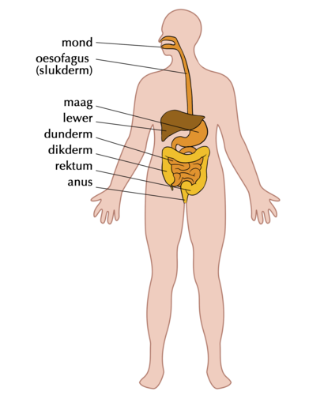
1. Die mond en oesofagus
Vertering begin in die mond wanneer voedsel gekou en met speeksel gemeng word. Dit beweeg in die oesofagus af wanneer jy sluk.
2. Maag
Die gekoude voedsel kom die maag binne en word verder verteer. Die maag bevat ensieme, stowwe wat die voedsel help verteer. Die maagwande trek saam om die voedsel verder af te breek tot 'n vloeibare vorm.
3. Dunderm
Die meeste vertering vind in die dunderm plaas. Absorpsie van voedseldeeltjies vind ook in die dunderm plaas.
4. Dikderm (of kolon)
Teen die tyd dat die voedsel die dikderm bereik is meeste van die voedingstowwe al geabsorbeer. Wat oorbly is water, soute en onverteerbare vesel. Die water wat oorbly word in die dikderm geabsorbeer.
Bakterieë wat in die dikderm leef, produseer Vitamien K en bietjie Vitamien B.
5. Rektum en Anus
Die oorblywende stowwe (genoem fesies) beweeg in die rektum in en dan uit deur die anus. Dit word egestie genoem.
Vloeidiagram van die spysverteringstelsel
Vloeidiagramme is diagramme wat toon hoe die verskillende stappe van 'n proses op mekaar volg. Dit toon die rigting (vloei) aan met behulp van pyltjies. Hierdie is 'n belangrike instrument om jou te help nadink oor wetenskaplike prosesse.
INSTRUKSIES:
Teken 'n vloeidiagram om die beweging van voedsel voor te stel vandat dit in die liggaam ingeneem word totdat dit uit die liggaam uitgewerp word.
Die blokkies moet die hoofkomponente toon wat by vertering betrokke is, in volgorde gelys met pyltjies tussen elkeen. Sluit onder elke komponent die belangrikste prosesse in wat tydens elkeen van daardie stadiums plaasvind.
Die leerders se vloeidiagramme kan lyk soos die een hieronder. 'n Idee is om hierdie op die bord te teken en leerders te vra om boeke uit te ruil om te kyk of hulle iets soortgelyks en logies geproduseer het.
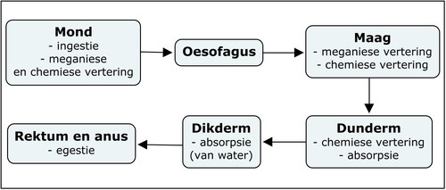
Gesondheidskwessies waarby die spysverteringstelsel betrokke is
geelsug
ulkus
Algemene siektes van die spysverteringstelsel sluit in:
Ulkusse: Partykeer ontwikkel oop sere of ulkusse in die voering van die mond, oesofagus, maag of boonste dele van die dunderm. Ulkusse kan baie pynlik wees. Dit word gewoonlik deur bakteriële infeksies en sommige medikasies veroorsaak.
Anorexia nervosa: Dit is een van baie eetversteurings. Mense wat ly aan hierdie eetversteuring het 'n abnormale vrees om gewig op te tel en daarom eet hulle met opset nie en ly met opset honger. Dit kan lei tot baie gesondheidskwessies soos beenverdunning, nierskade, hartprobleme en selfs die dood.
Diarree: Iemand wat baie dikwels los, waterige stoelgange het, het diarree. Baie siektes veroorsaak dat onverteerde voedsel te vinnig deur die dikderm beweeg vir water om geabsorbeer te word, en dit veroorsaak dan diarree.
Lewersirrose Hierdie siekte vervang geleidelik gesonde lewerweefsel met littekenweefsel en voorkom uiteindelik dat die lewer reg kan funksioneer. Alkoholmisbruik en vetagtige lewer wat deur vetsug en diabetes veroorsaak is, is die mees algemene oorsake van lewersirrose.
Suid Afrika het een van die hoogste voorkoms van slukdermkanker in die wêreld. Groot risikofaktore om hierdie kanker te ontwikkel is alkohol inname en rook.
Dit is goed om te weet van die gevare en gevolge van 'n ongesonde leefstyl.
Die sirkulasiestelsel
bloedvate
geslote bloedstelsel
netwerk
temperatuur
Het jy geweet dat die bloed wat deur jou liggaam beweeg 'n stelsel vorm? Om te sirkuleer beteken om rond te beweeg, en dus het ons die sirkulasiestelsel in die mens se liggaam wat bloed vervoer.
Die sirkulasiestelsel sluit bloed in sowel as limf, maar op hierdie vlak sal slegs die bloedsomloopstelsel hanteer word.
Doel van die sirkulasiestelsel
Die sirkulasiestelsel is verantwoordelik daarvoor om bloed met suurstof (O2) van die longe na die selle te vervoer, en om dan bloed met koolstofdioksied (CO2) terug na die longe te vervoer. Dit moet ook voedingstowwe vanaf die spysverteringstelsel na die selle van die liggaam versprei en afvalstowwe verwyder om uitgeskei te word.
Komponente van die sirkulasiestelsel:
arterieë
bloed
kapillêre vate
deoksigeneer
ekskreteer
gaswisseling
hart
longe
oksigeneer
venes
Die sirkulasiestelsel bestaan uit die hart en 'n stelsel bloedvate, insluitende arterieë, venes en kapillêre.
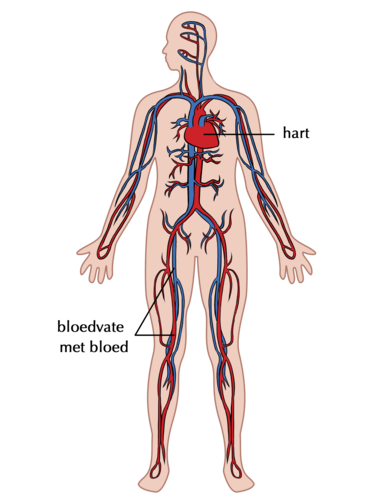Die sirkulasiestelsel bestaan uit die hart en bloedvate
1. Hart
Die hart is 'n baie sterk spier en pomp bloed deur die hele liggaam. Daar is vier kamers in die hart wat bloed ontvang en stuur na alle dele van die liggaam. Die boonste twee kamers word atriums genoem(enkelvoud = atrium) en die onderste twee kamers word ventrikels genoem.
Kyk na 'n video wat die rigting van bloedvloei deur die vier kamers van die hart toon bit.ly/14Fccfa
Die eerste hartoorplanting is uitgevoer deur Dr Chris Barnard in Suid Afrika in 1967!
2. Bloedvate
Daar is verskeie bloedvate wat bloed deur die hele liggaam dra. Dit sluit in:
arterieë
kapillêre bloedvate
venes
3. Bloed
Bloed word deur jou hele liggaam vervoer en dit dra verskeie stowwe. Die stowwe kan opgelos wees in die bloedvloeistof (plasma), soos koolstofdioksied, voedingstowwe en afvalprodukte, of andersins in rooibloedselle, soos suurstof.
Jou hart klop gemiddeld 100 000 keer 'n dag en 30 miljoen keer 'n jaar. As jy leef tot die ouderdom van 70, sal jou hart gemiddeld 2.5 biljoen keer klop!
Hoofprosesse in die sirkulasiestelsel
Ons sirkulasiestelsel bestaan eintlik uit twee stelsels wat saam funksioneer:
'n klein stelsel wat bloed tussen die longe en die hart sirkuleer; en
'n baie groter stelsel wat bloed vanaf die hart na die hele liggaam en weer terug na die hart toe sirkuleer.
Hierdie prosesse vind as volg plaas:
Bloed word gesirkuleer vanaf die hart na die longe. By die longe verlaat koolstofdioksied die bloed en kom suurstof die bloed binne. Hierdie proses word gaswisseling genoem. Omdat die bloed nou meer suurstof as koolstofdioksied bevat, sê ons dit is geoksigeneerd. Hierdie geoksigeneerde bloed keer weer terug na die hart toe.
Sodra dit in die hart aankom, word die suurstofryke bloed gesirkuleer om suurstof aan al die selle in die liggaam te verskaf, voordat dit terugkeer na die hart toe. Terselfdertyd dat dit suurstof aflewer, neem dit ook koolstofdioksied van die selle af op. Hierdie bloed het meer CO2 as O2, daarom is dit gedeoksigeneerde bloed. Die koolstofdioksied word uitgeskei wanneer dit weer by die longe kom.
Hierdie proses vind oor en oor plaas deur jou hele lewe, duisende kere 'n dag!
Speel 'n video soos hierdie een bit.ly/16IIBPU in die klas terwyl die kinders aan hulle aktiwiteite werk. Dit sal hulle help om belangrike terme te onthou.
Komponente van die sirkulasiestelsel:
Teken die sirkulasiestelsel
Ons gebruik gewoonlik in diagramme rooi om bloedvate aan te dui wat suurstofryke bloed bevat en blou om bloedvate aan te dui wat gedeoksigeneerd is.
INSTRUKSIES:
Bestudeer die diagram hieronder wat die sirkulasieproses verduidelik.
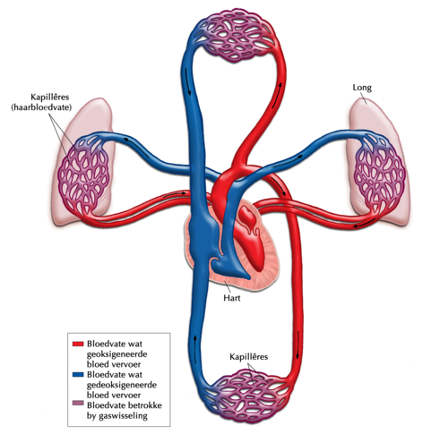
Gebruik die diagram hierbo om 'n sirkelvormige diagram te teken in die spasie wat verskaf word, wat toon hoe bloed deur die sirkulasiestelsel (wat uit twee dele bestaan) beweeg.
Jou sirkelvormige grafiek sal 'n volledige kringloop voltooi.
Daar is 'n verskil tussen 'n vloeidiagram en 'n sirkeldiagram: 'n vloeidiagram toon 'n proses van begin tot einde en pyltjies begin by een punt en eindig by die eindpunt. 'n Sirkeldiagram toon 'n proses wat oor en oor plaasvind, wat 'n sirkel vorm.
Voeg pyltjies by om die rigting aan te dui waarin die proses plaasvind.
Leerder-afhanklike antwoord
'n Vloeidiagram kan soos die een hieronder lyk. Laat u leerders dit eers self probeer voordat u een op die bord teken. Moet dit nie net op die bord teken vir hulle om af te skryf nie - hulle moet dit eers self probeer doen.
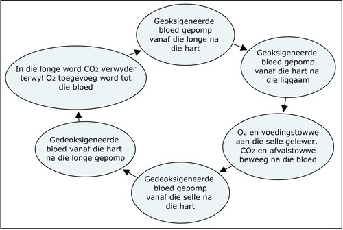
Jy kan aanlyn meer uitvind deur die skakels wat in die Besoek blokkies voorsien is te besoek. Wees nuuskierig en ontdek die moontlikhede!
Gesondheidskwessies waarby die sirkulasiestelsel betrokke is
bloeddruk
ontneem
skeur
Algemene siektes van die sirkulasiestelsel sluit in:
Hoë bloeddruk Dit gebeur wanneer die krag waarmee die bloed teen die wande van die bloedvate druk te hoog is en skade veroorsaak aan die kapillêres en aan verskeie organe.
Hartaanvalle: Gebeur wanneer 'n vernouing of bloedklont ontwikkel in een van die bloedvate wat die hartspier van bloed voorsien. As die vernouing of bloedklont groot genoeg is kan dit die bloedvloei na die hartspier verstop en die hart laat ophou pomp, wat 'n hartaanval genoem word. Die persoon kan sterf.
Beroertes: Vind plaas wanneer jou brein ontneem word van suurstof. Dit gebeur dikwels as gevolg van 'n verstopping in die bloedvate wat na die brein toe lei, of wanneer een van hierdie vate oopbars (oopskeur)
Die respiratoriese stelsel
asemhaal
uitasem
inasem
Ten nouste gekoppel aan die sirkulasiestelsel is die respiratoriese stelsel. Die sirkulasiestelsel handhaaf die bloedsomloop in jou liggaam, terwyl die respiratoriese stelsel met gaswisseling te doen het.
Doel van die respiratoriese stelsel
Die respiratoriese stelsel is verantwoordelik daarvoor om die liggaamselle met suurstof te voorsien en om koolstofdioksied te verwyder.
Alle diere het 'n respiratoriese stelsel: visse het kieue, paddas gebruik hulle vel en longe, voëls het lugsakke en insekte haal asem deur openinge in hulle eksoskelette wat spirakels genoem word.
Komponente van die respiratoriese stelsel:
alveolusse
brongusse
silia
diafragma
longe
mukus
farinks
tragea
Verskeie organe speel 'n belangrike rol in die respiratoriese stelsel.
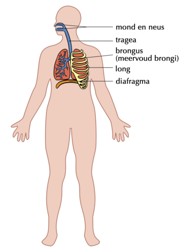'n Diagram van die strukture waaruit die respiratoriese stelsel bestaan
1. Mond en neus
Suurstofryke lug kom die liggaam binne deur die mond en neus waar dit verwarm word.
2. Tragea (word ook die lugpyp genoem)
Die tragea is 'n buis wat die bors binnegaan en lug toelaat om te vloei vanaf die mond tot in die brongusse, en daarvandaan in die longe in.
Dit word oopgehou deur kraakbeenringe. Wanneer stofdeeltjies en kieme in die lug die tragea binnekom tydens inaseming, vang die slymvliesvoering in die tragea hierdie deeltjies vas en die silia werk saam om dit uit jou liggaam uit te vee. Wanneer jy nies of hoes verdryf jy die mukus en vreemde deeltjies uit jou liggaam uit.
'n Nies beweeg teen meer as 160 km/uur.
3. Brongusse
Die tragea verdeel in twee lugbuise wat brongusse genoem word en wat elk na een van die longe lei. Hierdie buise verdeel dan verder in kleiner en kleiner buisies wat met die klein lugsakkies (alveolusse) van die longe verbind.
4. Longe
Die belangrikste organe van die respiratoriese stelsel is die longe. Die klein alveolusse of lugsakkies in die long word omring deur klein kapillêre bloedvate waar gaswisseling plaasvind.
Deur 'n pasiënt se eie stamselle te gebruik, kon chirurge die eerste tragea van die mens ontwikkel en oorplant in 2008.
5. Diafragma
Hierdie koepelvormige spierplaat onder die longe laat jou toe om asem te haal. Wanneer dit saamtrek, beweeg dit afwaarts en jou longe vul met lug. Wanneer dit ontspan beweeg dit opwaarts en forseer die lug uit jou longe uit. Dit is die belangrikste spier wat vir asemhaling gebruik word.
Besoek hierdie animasie en kyk hoe die ribbekas se vorm en grootte verander tydens inaseming en uitaseming bit.ly/11WaP8h
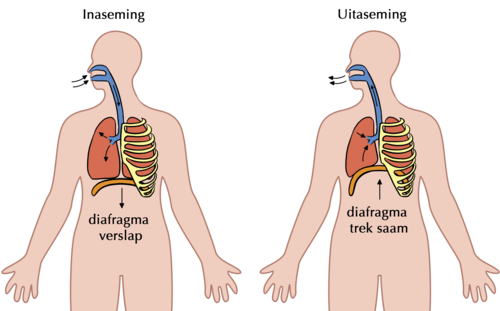Hierdie diagram help ons om te verstaan hoe asemhaling plaasvind, en toon hoe die diafragma saamtrek en ontspan.
Hoofprosesse in die respiratoriese stelsel
Drie afsonderlike prosesse vind in die respiratoriese stelsel plaas:
Asemhaling vind plaas wanneer ons suurstof in ons liggaam (longe) inneem en koolstofdioksied uit die liggaam forseer. Asemhaling vind dus in twee fases plaas:
Inaseming - om lug in te trek
Uitaseming - om lug uit te forseer
Gaswisseling vind op twee plekke plaas deur 'n proses wat diffusie genoem word:
in die alveolusse, diffundeer suurstof vanuit die longe in die bloed in en koolstofdioksied diffundeer vanuit die bloed in die longe in
by die liggaamsweefsels diffundeer suurstof vanuit die bloed in die selle in en koolstofdioksied vanuit die selle diffundeer in die bloed in
Selrespirasie vind in die mitochondria van selle plaas om die chemiese energie in voedsel vry te stel.
Mense verwar respirasie gereeld met asemhaling. Asemhaling is die inname van lug in die liggaam in deur die longe. Respirasie of selrespirasie vind plaas in die selle om energie vry te stel wanneer suurstof met glukose en ander voedingstowwe gekombineer word.
Die gemiddelde gaap duur omtrent 6 sekondes. Maar hoekom gaap ons? Die mees algemene rede is dat, wanneer jy moeg is, jy nie so diep asemhaal nie, so gaap help ons om meer suurstof in die bloed in te bring.
Gesondheidskwessies waarby die respiratoriese stelsel betrokke is
Sommige algemene gesondheidskwessies van die respiratoriese stelsel sluit in:
Asma: veroorsaak deur allergieë wat inflammasie en vernouing van die lugweë tot gevolg het
Longkanker: 'n siekte wat meestal veroorsaak word deur rook of ernstige lugbesoedeling
Brongitis : swelling van die voering van die brongusse as gevolg van infeksie wat veroorsaak dat jy hoes en dit moeilik maak om lug in die longe te kry
Longontsteking: 'n infeksie in die longe waar die alveolusse met vloeistof vul
TB (Tuberkulose): 'n aansteeklike siekte wat deur die bakterie Mycobacterium veroorsaak word
Om meer oor longkanker te leer, kyk na hierdie video oor hoe hierdie siekte jou liggaam affekteerbit.ly/17gAxnF
Die muskuloskeletale stelsel
bros
kollageen
fraktuur
raamwerk
ligament
mineraalsoute
spier
tendons
Al die bewegings wat jou liggaam uitvoer maak staat op 'n stelsel spiere, tendons, ligamente, bene en gewrigte wat saamwerk. Hierdie is die komponente van jou muskuloskeletale stelsel.
Doel van die muskuloskeletale stelsel
Spierweefsel is verantwoordelik daarvoor dat beweging in die liggaam plaasvind, maar spiere moet geheg wees aan 'n raamwerk om beweging moontlik te maak.
Die bene van die skelet verskaf 'n raamwerk vir spiere om aan te heg, sodat beweging moontlik is. Die skelet beskerm ook die liggaam, veral die sagte, broos organe soos die hart, longe en brein.
Komponente van die muskuloskeletale stelsel
gewrig
saamtrek
kraakbeen
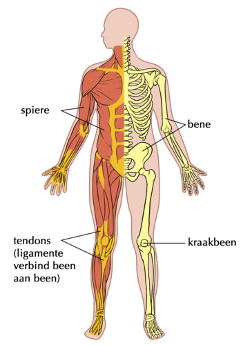Die komponente van die muskuloskeletale stelsel help om beweging voort te bring.
Die komponente van die muskuloskeletale stelsel sluit die volgende in:
1. Spiere
Spiere laat ons toe om te beweeg omdat hulle kan saamtrek (korter word) en ontspan (langer word).
'n Video oor spiersametrekking en ontspanning in die arm.bit.ly/13ZlIUd
Die spiere wat die vinnigste beweeg in jou liggaam is die spiere wat jou ooglede beheer! Daar is 'n rede waarom ons die frase gebruik "in 'n oogwink" om te sê dat iets baie vinnig is!
2. Bene
Bene verskaf steun en help om die vorm van die liggaam te behou. Die plek waar bene ontmoet word 'n gewrig genoem - dink aan jou knie of elmbooggewrig, of jou vinger- en toongewrigte.
Babas word gebore met 305 bene terwyl volwassenes net 206 bene het. Soos wat babas tot volwassenes groei smelt baie van die kleiner bene saam om groter bene te vorm.
3. Kraakbeen
Kraakbeen is stewig maar elasties en word gevind in gewrigte tussen bene en tussen die ribbe en borsbeen (soos aangedui in die diagram). Dit vorm ook die ore, neus en brongiale buise, en vorm skyfies tussen die werwels van die ruggraat.
4. Tendons
Jou spiere heg aan die been met sterk koorde wat tendons genoem word. Jy kan sommige van die tendons in jou liggaam voel, byvoorbeeld jou enkel (genoem die Achilles-tendon).
5. Ligamente
Ligamente word gevind tussen gewrigte en hou bene aan mekaar binne in die gewrig. Ligamente is baie sterk.
Hoofprosesse in die muskuloskeletale stelsel
buiging
voortbeweging
self-aangedrewe
Ons kan ons hele liggaam van een plek na 'n ander beweeg deur self-aangedrewenheid. Dit word voortbeweging. genoem. Voortbeweging verskil van beweging.
Beweging is verandering in vorm, rigting, posisie of grootte van 'n deel van die liggaam. Diere toon voortbeweging en beweging. Wat van plante? Dink jy plante toon voortbeweging en beweging?
Vra u leerders hierdie vraag om te kyk of hulle dit verstaan. Die antwoord is dat plante slegs beweging toon omdat hulle van vorm kan verander en groei in 'n sekere rigting in reaksie op 'n lig- of waterprikkel, maar hulle is op een plek gewortel - hulle kan nie voortbeweeg nie (van een plek na 'n ander beweeg nie). Moedig leerders aan om notas van hierdie bespreking te neem in óf 'n aparte notaboek óf in die kantlyn van die werkboek.
Jy gebruik 200 spiere wanneer jy slegs een tree gee!
Beweging word moontlik gemaak deur die saamtrek en ontspan van spiere. Spiere word deur senuwees gestimuleer om saam te trek.
Gesondheidskwessies waarby die muskuloskeletale stelsel betrokke is
'n Innoverende gebruik van 3D drukkers om te help om frakture in bene te herstel! bit.ly/13Q6hBw
Algemene afwykings van die muskuloskeletale stelsel sluit in:
Ragitis: Hierdie afwyking word veroorsaak deur 'n gebrek aan vitamien D, kalsium of fosfaat wat lei tot sagte, swak bene. 'n Tipiese simptoom in kinders wat ragitis het, is bak bene.
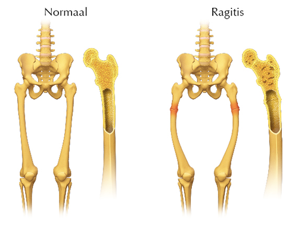Kan jy sien hoe die vorm van die bene verander wanneer 'n persoon ragitis het?
Artritis: Hierdie is 'n toestand waarin die gewrigte in die liggaam inflammasie inkry, pynlik word en swel. Die kraakbeen tussen die gewrigte breek af, wat veroorsaak dat die bene teen mekaar vryf, wat baie pynlik is.
Osteoporose: Dit vind plaas wanneer die beenweefsel bros, dun en sponsagtig word. Sulke broos bene kan maklik breek, en hulle begin verkrummel en stort ineen. Al is osteoporose algemeen onder ouer mense (veral ouer vroue), kan tieners en jong volwassenes dit ook ontwikkel.
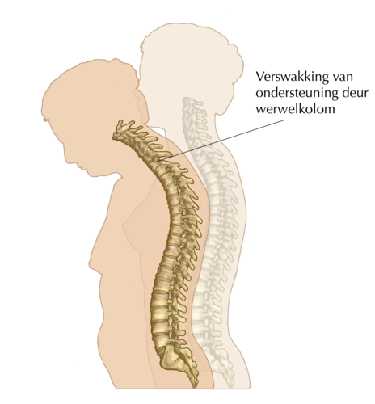Soos wat hierdie vrou ouer geword het, het sy osteoporose ontwikkel wat veroorsaak dat haar werwelkolom verkrummel en ineenstort en daarom buig sy nou vooroor.
'n Alternatief om die opsommingsdiagram met die mens se uiteensetting aan die einde van hierdie stelsel te doen, is om leerders te vra om 'n geheuekaart te produseer. Dit is belangrik dat leerders blootgestel word en ervaring ontwikkel met verskillende tegnieke om inligting op te som en wat hulle help om te leer. Dit is noodsaaklik vir latere grade. Hieronder is 'n voorbeeld van 'n geheuekaart wat 'n leerder kan opstel:
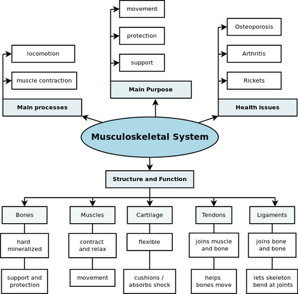
Die ekskretoriese stelsel / uitskeidingstelsel
blaas
ekskresie
nier
metaboliese afvalprodukte
metaboliseer
toksies
ureum
ureter
uretra
urineer
Ons gaan nou die ekskretoriese stelsel bestudeer. Ekskresie word dikwels verwar met egestie, waarvan ons voorheen geleer het.
Om tussen ekskresie en egestie te onderskei
Onthou jy, jy het die verskil geleer tussen ekskresie en egestie? Verduidelik hoe jy die verskil tussen die twee terme verstaan.
Egestie is...
Egestie is die verwydering van onverteerde materiaal (soliede afval) uit die spysverteringskanaal via die anus.
Ekskresie is ...
Ekskresie is die verwydering van metaboliese afvalprodukte, vanaf reaksies wat in die selle plaasvind, in die vorm van urine, sweet en uitaseming
Doel van die ekskretoriese stelsel
Ons selle gebruik suurstof en voedingstowwe om te funksioneer en produseer ook tydens die proses metaboliese afvalprodukte insluitend:
ureum: 'n stof wat gevorm word wanneer proteïene in die lewer afgebreek word
koolstofdioksied : 'n afvalproduk van selrespirasie
Die organe van die ekskretoriese stelsel is daarvoor verantwoordelik om hierdie skadelike metaboliese afvalprodukte uit die bloed te verwyder sodat dit nie tot hoë konsentrasies opbou nie. Tydens die proses moet daar voedingstowwe en water teruggehou word vir die liggaam om te kan funksioneer. Een van die hooffunksies van die ekskretoriese stelsel is om te verhoed dat daar te veel of te min water in die liggaam oorbly.
Komponente van die ekskretoriese stelsel
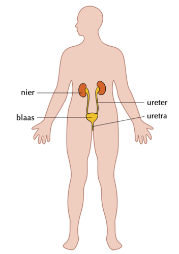Die ekskretoriese stelsel is daarvoor verantwoordelik om metaboliese afvalprodukte uit die bloed te verwyder
Ons weet reeds dat die longe koolstofdioksied (CO2) uitskei wanneer jy uitasem. Nog 'n orgaan wat afvalprodukte uitskei is die vel. Wanneer jy sweet, ekskreteer jou vel oortollige water, soute en 'n klein persentasie ureum. Maar in hierdie afdeling sal ons fokus op die ekskretoriese stelsel wat metaboliese afval uit jou bloed verwyder in die vorm van urine.
Om dit te doen gebruik die liggaam die urienstelsel wat uit vier hoofdele bestaan.
1. Niere
Die niere filtreer al die bloed in jou liggaam om ureum uit die bloed te verwyder. Jy het twee niere, elkeen omtrent die grootte van jou vuis en boontjievormig. Jou niere produseer urine wat 'n kombinasie van oortollige water en afvalprodukte is.
Die eerste nieroorplanting het in 1954 plaasgevind.
2. Ureters
Daar is twee ureters (dun buisies) wat elke nier verbind met die blaas en die urine van die niere na die blaas dra.
3. Blaas
Die blaas is 'n ballonagtige orgaan waarin die urine versamel voordat dit tydens urinering uitgeskei word.
4. Uretra
Die uretra is 'n buis wat die blaas met die buitekant van die liggaam verbind en waardeur die urine uitgeskei word.
Hoofprosesse in die ekskresie stelsel
Daar word vier hoofprosesse hieronder bespreek.
1. Filtrasie: Al die bloed in die liggaam beweeg deur die niere as deel van die bloedsomloopstelsel. Die niere filtreer die bloed om ongewenste minerale en ureum te verwyder, sowel as oortollige water. Van die water word verwyder voordat die metaboliese produkte in oplossing in die vloeibare urine uitgeskei kan word.
Jou niere filtreer omtrent 125 ml bloed elke minuut! Omdat jy 7 tot 8 liter bloed in jou liggaam het, word al jou bloed 20 tot 25 keer per dag deur jou niere gefiltreer!
2. Absorpsie: Nadat die bloed deur die niere gefiltreer, is word die stowwe wat die liggaam benodig in die bloed herabsorbeer sodat hulle nie verlore gaan in die urine nie.
3. Diffusie: Sekere stowwe word in en uit die gespesialiseerde selle van die nier vervoer deur die proses van diffusie.
4. Ekskresie: Die niere kanaliseer die vloeibare urine deur die ureters na die blaas waar dit geberg word. Wanneer die blaas vol geword het, gebruik dit spiere om die urine uit die liggaam te forseer deur die uretra. Dit vorm deel van die proses genoem ekskresie.
Gemiddeld produseer ons niere 1.5 liters urine elke dag.
Gesondheidskwessies waarby die ekskretoriese stelsel betrokke is
antibiotika
infeksie
Algemene siektes van die ekskretoriese stelsel sluit in:
Nierversaking: Wanneer dit gebeur verloor die nier die vermoë om behoorlik afvalstowwe te filtreer en verwyder, wat veroorsaak dat afval in die liggaam ophoop. Dit is baie skadelik en kan fataal wees. In sulke gevalle moet die pasiënt baie gereelde nierdialise ondergaan. Dialise behels die gebruik van 'n masjien wat die bloed vir die pasiënt filtreer om die afvalprodukte te verwyder.
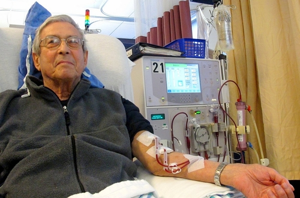'n Pasiënt wat dialise ontvang om hulle bloed te filtreer omdat die niere nie werk soos hulle moet nie.
Blaasinfeksie: Dit is een van die mees algemene infeksies in vroue maar is redelik skaars in mans. Bakterieë kan die blaas binnekom en infeksie veroorsaak. Dit veroorsaak swelling en pyn wanneer daar geürineer word.
Nierstene: Nierstene vorm wanneer vloeistofinname te laag is, wat daartoe lei dat die konsentrasie van opgeloste stowwe (soute en minerale) in die nier te hoog word. Dit kan weer lei tot 'n klein kristal (steen) wat vorm. Die niersteen kan in die nier bly of in die ureter afbeweeg om in die urine uitgeskei te word. Maar 'n groter steen kan ernstige pyn veroorsaak in die urineweg en kan selfs vassteek, wat die vloei van urine kan blokkeer en ernstige pyn of bloeding kan veroorsaak.
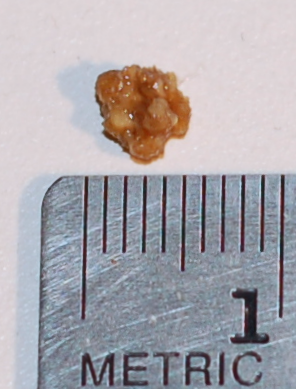'n Niersteen wat omtrent 4.5 mm in deursnit is.
'n Opsommende video van die ekskretoriese stelsel. bit.ly/160u9lA
Die senuweestelsel
brein
gelei
impuls
senuwee
neuron
stimulus
oordra
sig
'n Prettige idee is om die liedjie van die senuweestelsel in die Besoek-boksie te speel terwyl die leerders in die klas instap en gaan sit.
Ons senuweestelsel is 'n komplekse netwerk wat senu-impulse tussen verskillende dele van die liggaam dra. Die senuwees in ons liggaam ontvang stimuli uit die liggaam en uit die omgewing (vanaf byvoorbeeld die ore, oë, vel of tong). Hierdie prikkels word verander in impulse wat na die brein en rugmurg gaan.
Stimuli is die meervoudvorm van die woord stimulus.
Komponente van die senuweestelsel
Die senuweestelsel bestaan uit verskeie dele.
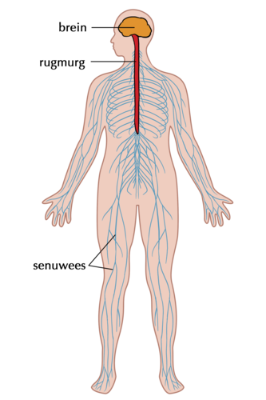
1. Senuwees
Senuwees is die lang vesels wat boodskappe vanaf die brein en rugmurg gelei na die res van die liggaam en terug. Elke senuwee is eintlik 'n ingeslote bondel senuweeselle wat neurone genoem word. Die senuwees werk saam om boodskappe deur die hele liggaam te dra. Die senuweestelsel bestaan uit senuweefsel.
Senuwee-impulse beweeg na en van die brein teen 274 km per uur.
2. Brein
Jou brein word binne jou skedel gevind. Die brein is deel van jou sentrale senuweestelsel en stuur boodskappe na die res van jou liggaam toe. Daar is verskillende areas in die brein wat verskillende funksies het. Al hierdie verskillende areas kommunikeer ook met mekaar.
Burger wetenskap: Speel 'n speletjie om MIT te help om 'n kaart van die brein te teken!bit.ly/160udlh
Leer meer omtrent die brein en neem deel aan die interaktiewe aktiwiteite om die brein te stimuleerbit.ly/13stpSU
Jou brein maak minder as 2% van jou totale liggaamsgewig uit, maar dit gebruik 20% van jou liggaam se energie!
3. Rugmurg
Die rugmurg strek vanaf die brein deur die rugstring, beskerm deur jou werwelkolom. Die rugmurg is 'n bondel senuweefsel en ander ondersteunende selle. Saam met die brein vorm die rugmurg ook deel van jou sentrale senuweestelsel.
4. Sinsorgane
Ons het genoem dat daar 'n sentrale senuweestelsel is (wat uit die brein en rugmurg bestaan). Die tweede deel van die senuweestelsel in ons liggame is die perifere senuweestelsel.
"Perifere" beteken aan die buitekant. Dus is die perifere senuweestelsel buitekant die sentrale senuweestelsel.
Die perifere senuweestelsel verbind die sentrale senuweestelsel met die spiere en organe. Verskillende sinsorgane is verantwoordelik om inligting in te samel en te versend na die sentrale senuweestelsel via sensoriese senuwees.
Ons sinsorgane is ons:
ore
neus
oë
vel
tong
Die vel is die grootste orgaan in die mens se liggaam.
Hoofprosesse in die senuweestelsel
ouditief
degeneratiewe
optiese
Die senuweestelsel is verantwoordelik vir sleutelprosesse in die liggaam. Dit word hierna bespreek.
Impulse stuur en ontvang: Senuweeselle in die brein stuur en ontvang verskeie boodskappe van verskeie bronne op enige gegewe oomblik. Hierdie word as elektriese impulse oorgedra.
Die hoeveelheid elektrisiteit wat deur die brein gebruik word om boodskappe te stuur en te ontvang, kan die lig in julle yskas laat brand.
Die sentrale senuweestelsel interpreteer hierdie seine en dis hoe ons die wêreld rondom ons waarneem. Hierdie prosesse sluit in:
Gehoor: In die oor word klankgolwe omgesit in elektriese seine wat deur die gehoorsenuwee na die brein toe gelei word. Dit veroorsaak dat ons verstaan wat ons hoor.
Sig: Om te sien en om te verstaan wat jy sien is komplekse prosesse. Lig kom die oog binne en stimuleer gespesialiseerde selle in die oog. Hierdie selle dra seine deur die optiese senuwee na die brein oor, waar hulle geïnterpreteer word as sig.
Gevoel: Die vel laat ons toe om te voel en om die wêreld om ons te ervaar deur aanraking. Miljoene senuwee-eindpunte in die vel, wat reseptore genoem word, bedek die vel, spiere, bene en gewrigte sowel as die interne organe en die sirkulasiestelsel. Hierdie reseptore reageer op druk, pyn, temperatuur en beweging.
Smaak: Smaakknoppies in jou tong en dele van jou mond kan tussen die verskillende smake onderskei: soet, suur, bitter, sout. Hierdie reseptore werk nou saam met die reseptore in die neus. Die smaak en reuk van voedsel word saam na die brein toe gestuur waar dit geprosesseer en geïnterpreteer word.
Reuk: Senuweeselle in die voering van jou neus reageer op molekules in die lug. Hulle stuur boodskappe na die brein toe wat die reuk dienooreenkomstig interpreteer en enigeen van omtrent 10 000 verskillende reuke kan herken!
Regulering:'n Belangrike deel van die senuweestelsel is om die balans in die liggaam te handhaaf. Dit sluit in die regulering van liggaamstemperatuur. Ons liggame moet omtrent by 37°C gehou word om effektief te werk. As die liggaam te warm is, sal die brein dalk probeer om die liggaam af te koel deur meer te sweet. As jy baie koud kry, sal jy begin bewe om hitte-energie te genereer. Hierdie reaksies op veranderinge in liggaamstemperatuur word beheer deur die senuweestelsel.
Gesondheidskwessies waarby die senuweestelsel betrokke is
Trauma en beserings aan die brein en rugmurg: Enige skade aan die brein of rugmurg kan verwoestende gevolge op die mens se liggaam hê. Byvoorbeeld, mense wat hulle nekke breek in 'n ongeluk beskadig, dikwels hulle rugmurg. Dit verhoed dat die brein boodskappe na die liggaam stuur of ontvang en die persoon is dan verlam.
Beroerte: As bloedvloei na die brein verstop word, begin breinselle doodgaan selfs na net 'n paar minute sonder bloed of suurstof. Dit kan lei tot 'n beroerte waar 'n deel van die breinfunksie verlore gaan.
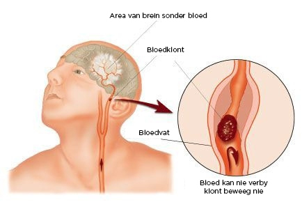Wanneer die brein as gevolg van 'n bloedklont ontneem word van bloed en suurstof, kan die persoon aan 'n beroerte lei.
Degeneratiewe versteurings: Daar is verskeie probleme geassosieer met die senuweestelsel wat 'n geleidelike verlies aan funksie oor tyd (degeneratief) kan veroorsaak. Hierdie toestande sluit in Alzheimer se siekte, Parkinson se siekte en Veelvuldige Sklerose.
Geestelike probleme: Voorbeelde sluit in depressie, angsversteuring en persoonlikheidsversteurings.
Probleme met sinsorgane: Ons het die verskillende sinsorgane bespreek wat geassosieer word met die senuweestelsel. Hierdie organe kan ook probleme ondervind soos:
Doofheid
Blindheid
Bysiendheid
Uitwerkings van dwelmmiddels en alkohol op die brein: Verskillende soorte dwelmmiddels teiken verskillende areas in die brein en dit is meestal die brein se reaksie(s) daarop wat veroorsaak dat mense
dwelmmiddels en/of alkohol wil gebruik.
Onderwysers kan hierdie geleentheid gebruik om die onderwerp van dwelmmisbruik te bespreek. Hier is 'n paar voorbeelde indien u sommige van die uitwerkings van dwelmmiddels en alkohol op die brein aan u leerders wil verduidelik:
Dwelmmiddels soos meta-amfetamiene (tik) en kokaïne laat die gebruiker 'n gevoel van bevrediging ervaar wat veroorsaak dat hierdie dwelmmiddels verslawend raak.
Mense gebruik ook dwelmmiddels as 'n stimulant - kaffeïne, kokaïne en amfetamiene versnel mense se reaksies.
Alkohol en marijuana (dagga) het die teenoorgestelde uitwerking op die brein en vertraag dit - hierdie word kalmeermiddels en hipnotika genoem.
Hallusinogene soos LSD en Ecstasy, en ook meer onlangs Woonga en Nyaope, laat jou dinge sien wat nie werklik is nie.
Morfien en heroïen word gebruik om ernstige pyn te verlig en wanneer dit misbruik word vertraag dit die gebruiker se reaksies.
Dit kan goed wees om vir leerders te verduidelik dat dieselfde dwelmmiddel nuttig en voordelig kan wees wanneer dit verstandig gebruik en in die korrekte dosis gebruik word, maar misbruik kan word wanneer dit onverantwoordelik of in buitensporige hoeveelhede gebruik word.
Alkohol en dwelmmisbruik kan onomkeerbare breinskade, geheueverlies, verminderde vermoë om te leer, 'n groter risiko van beroertes en hartaanvalle en 'n verskeidenheid van emosionele en geestelike probleme veroorsaak.
Die gevolge van dwelm en alkohol op die adolessente breinbit.ly/14k6icr
Die voortplantingstelsel
ovarium
ovum
penis
voortplanting
skrotum
sperm
testes
uterus
vagina
baarmoeder
Doel van die voortplantingstelsel
In mense, soos in ander eukariotiese organismes, is die belangrikste doel van die voortplantingstelsel om geslagselle te produseer om die voortbestaan van die spesies te verseker.
Komponente van die voortplantingstelsel
Ons gaan later in meer detail die voortplantingsorgane bestudeer, in die volgende hoofstuk. Kom ons kry vir eers net 'n oorsig oor die hoofkomponente van die voortplantingstelsel.
Die vroulike (links) en manlike (regs) voortplantingsorgane verskil:
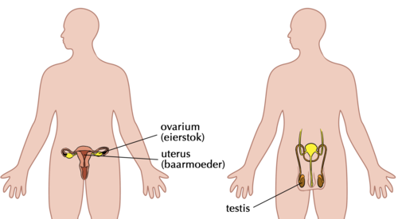
1. Ovaria
Die ovaria is binne die vrou se liggaam geleë in die laer buik en produseer volwasse eierselle (ova).
Die grootste sel in die mens se liggaam is die ovum (eiersel) en die kleinste sel is die spermsel.
2. Uterus
Die uterus (ook genoem die baarmoeder) word by vroulike individue gevind. Dit het 'n dik voering en spierwand. Dit is waar 'n bevrugte eiersel sal inplant en ontwikkel tydens swangerskap.
Party van die sterkste spiere in die vrou se liggaam word in die uterus gevind! Kan jy dink aan die redes waarom dit so is?
Die spiere in die uterus is van die sterkste in die menslike liggaam. Dit is omdat dit moet kan groei en saamtrek om 'n groeiende fetus te huisves en om die fetus uit te stoot tydens kraam.
3. Testes
Die geslagsorgane in mans is geleë in die skrotum, 'n velsak wat tussen die bene hang. Tydens puberteit begin die testes spermselle produseer.
Hoofprosesse in die voortplantingstelsel
ejakulasie
bevrugting
gameetselle
ovulasie
puberteit
geslagsomgang
Tydens geslagtelike voortplanting kombineer die ovum/eiersel en 'n sperm om 'n nuwe individu te vorm. Kom ons doen 'n aktiwiteit om meer uit te vind omtrent die hoofprosesse in die voortplantingstelsel.
Hierdie onderwerp sal behandel in die volgende hoofstuk behandel word, daarom kan 'n eenvoudige aktiwiteit nou gedoen word om hierdie nuwe terme na te slaan en definisies neer te skryf.
Definieer die hoofprosesse wat in voortplanting betrokke is
INSTRUKSIES:
Hieronder is 'n lys van die hoofprosesse wat betrokke is by die voortplantingstelsel.
Slaan elke term na, óf in jou woordeboek óf op die internet en skryf 'n kort beskrywing neer op die lyntjies wat voorsien is.
Die eerste drie is vir jou gedoen.
Groei
Groei is die toename in grootte en massa van 'n organisme soos wat dit oor tyd ontwikkel.
Seldeling
Seldeling is die proses wanneer 'n ouersel verdeel in twee dogterselle. In die voortplantingstelsel vind seldeling plaas in die ovaria en testes om gamete (sperme en eierselle) te produseer.
Volwassewording
Volwassewording is die proses van volwasse word. In mense verwys dit na puberteit waar geslagorgane geslagsryp word sodat hulle kan voortplant.
Kopulasie
Kopulasie is die daad van geslagsomgang (verwekking) wanneer 'n man sy penis in die vrou se vagina plaas.
Ejakulasie
Dit is die vrystelling van sperme by die vrou se serviks tydens geslagsomgang.
Ovulasie
Dit is wanneer 'n volwasse ovum (vroulike eiersel) uit die ovarium vrygestel word een keer per maand.
Menstruasie
As die ovum nie bevrug is nie, word die voering van die uterus tydens menstruasie uitgewerp.
Bevrugting
Wanneer 'n manlike (spermsel) en vroulike (eiersel) gameet versmelt (bymekaar kom) ná kopulasie.
Inplanting
In die voortplantingstelsel verwys dit na die proses wanneer die bevrugte eiersel inplant (stewig heg aan) die voering van die uterus.
Gesondheidskwessies waarby die voortplantingstelsel betrokke is
Onvrugbaarheid: Amper 10% van heteroseksuele paartjies het probleme om swanger te word en mag selfs glad nie in staat wees om geslagtelik voor te plant nie. Dit word onvrugbaarheid genoem en dit kan by beide mans en vrouens voorkom.
Fetale Alkohol Sindroom: Wanneer 'n swanger moeder alkohol drink tydens haar swangerskap, kan die alkohol ernstige geboortedefekte veroorsaak in die ongebore baba. Dit sal die kind vir die res van sy hele lewe affekteer en die skade is onomkeerbaar.
Bykomende inligting oor fetale alkohol sindroom kan by hierdie skakel gesien word: bit.ly/14k6k4f
Suid Afrika het die hoogste persentasie van Fetale Alkohol Sindroom-gevalle in die wêreld, veral in die Wes Kaap. Dit is baie tragies en programme word geïmplimenteer om mense op te voed oor die gevare daarvan om tydens swangerskap alkohol te gebruik.
Seksuele SOS'e: Vele lewensgevaarlike siektes soos MIV/VIGS, sifilis en gonorree word tydens geslagsomgang oorgedra.
Leer meer oor SOS'e en seksuele gesondheid:bit.ly/1cEtUlc
Opsomming
Daar is baie komplekse stelsels wat in ons liggame funksioneer
Elke stelsel het baie spesifieke organe en weefsels wat sleutelkomponente is om die stelsel optimaal te laat funksioneer.
Verskillende prosesse vind plaas wat afhanklik van die sleutelkomponente in elke stelsel is.
Daar is verskeie gesondheidskwessies wat die stelsels van die liggaam affekteer en wat dikwels voorkom kan word deur 'n gesonde lewenstyl en verstandige (ingeligte) lewenskeuses.
Konsepkaart
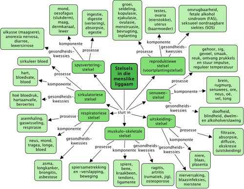
Hersieningsvrae
Wat beteken vertering? [4 punte]
Die afbreek van voedsel tot klein oplosbare stukke wat in die bloed vervoer kan word en geabsorbeer kan word deur die selle.
Noem die vier hoofprosesse wat betrokke is by die spysverteringstelsel.[4 punte]
Ingestie, Vertering, Absorpsie en Egestie
Beskryf die verskillende komponente van die spysverteringstelsel en hulle funksie. [15 punte]
Mond en oesofagus: voedsel word gekou in die mond en beweeg deur die oesofagus in die maag in
Maag: bolus kom die maag binne waar dit meganies verteer word deur dit te karring en chemies verteer word deur maagsappe in die maag.
Dunderm: Die meeste van die chemiese vertering en absorpsie vind in die dunderm plaas, waar voedsel chemies afgebreek word tot klein deeltjies wat deur die wande van die dunderm geabsorbeer kan word en deur die bloed na die selle vervoer word.
Dikderm: water wat oorgebly het in die dunderm word in die dikderm geabsorbeer en onverteerbare vesel word agtergelaat om deur te beweeg en fesies te vorm.
Rektum en anus: onverteerde vesel en -stowwe (fesies) beweeg vanaf die dikderm tot in die rektum en anus vanwaar dit uitgewerp word.
Diarree kan baie gevaarlik vir babas wees. Hoekom dink jy is dit so? Hoe kan dit voorkom word? [3 punte]
Babas wat diarree het verloor op hierdie manier groot hoeveelhede onverteerde voedingstowwe en water. Hulle liggame ontwater vinnig en hulle word te lusteloos om te eet of te drink, wat hulle liggame selfs verder dehidreer. As hulle nie mediese aandag kry nie kan hulle selfs sterf. Dit kan voorkom word deur hulle bottels en voedingsapparate te steriliseer om die oordrag van bakterieë wat diarree veroorsaak te voorkom.
Onderskei tussen inaseming en uitaseming. [2 punte]
Inaseming: inasem; uitaseming: uitasem
Word koolstofdioksied uit jou liggaam geëkskreteer of geëgesteer? Verduidelik hoekom jy so sê. [3 punte]
Egestie is die verwydering van onverteerde stowwe en vesel uit die liggaam. Ekskresie is die verwydering van afvalstowwe van metabolisme, insluitende van respirasie. Omdat koolstofdioksied 'n afvalproduk van selrespirasie is, is dit geëkskreteer.
Teken 'n eenvoudige diagram om te toon hoe bloed deur die liggaam gesirkuleer word in 'n geslote bloedstelsel. [10 punte]
Leerder-afhanklike antwoord
Wat is die verskil tussen asemhaling en respirasie? [5 punte]
Asemhaling: om lug in die liggaam in te neem en weer uit deur die mond, tragea, brongusse en longe.
Respirasie: vind plaas op sellulêre vlak wanneer suurstof in die selle ingeneem word waar dit gebruik word om energie vry te stel uit voedsel. Koolstofdioksied is 'n afvalproduk hiervan en dit beweeg tot in die bloed en word na die longe toe vervoer om uitgeasem te word.
Beskryf hoe die twee dele van jou muskuloskeletale stelsel funksioneer, wanneer jy trappe moet klim. [3 punte]
Spiere trek saam en ontspan om die bene te beweeg by die gewrigte en om werklike beweging toe te laat. Tendons en ligamente word ook gebruik.
Wat is die funksies van die bene in die skelet? [2 punte]
Bene is 'n aanhegtingsplek vir spiere en verskaf beskerming en steun.
Dwelmmiddels en alkohol het verskeie negatiewe uitwerkings op die liggaam. Lys ten minste 3. [3 punte]
Leerders was blootgestel aan verskeie negatiewe gevolge en moet hierna verwys in hierdie antwoord. Hierdie kan enige van die volgende insluit, onder andere:
Afhanklikheid van die dwelmmiddel / alkohol maak dit amper onmoontlik om die drang te weerstaan en die verslaafde sal amper enigiets doen om geld te kry om meer te koop.
Orgaanskade en uiteindelik orgaanversaking en dood.
Verminderde breinaktiwiteit en skade aan breinselle wat lei tot aanvalle, verswakte sig en motoriese koördinasie, uitdowing, ens.
As dit binneaars gebruik word, staan die gebruiker 'n groot kans om infeksie deur MIV of ander aansteeklike siektes te kry.
Stimulant-dwelmmiddels soos nikotien en kokaïne affekteer ook die respiratoriese stelsel.
Rook affekteer ook amper elke ander stelsel in die liggaam - vaskulêre, vel, ens
ens
Verduidelik waarom dit so gevaarlik is vir 'n swanger vrou om alkohol te drink tydens swangerskap.[2 punte]
As 'n swanger vrou alkohol gebruik tydens swangerskap kan dit by die ontwikkelende baba gebreke veroorsaak, byvoorbeeld, Fetale Alkohol Sindroom en fisiese- en sentrale senuweestelsel-abnormaliteite. Hierdie gevolge is permanent en onomkeerbaar.


{kind=link}